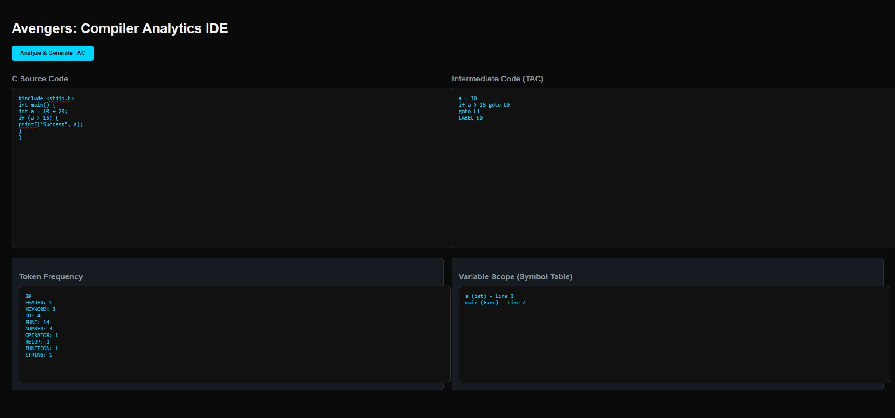
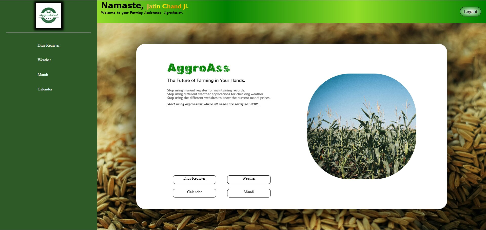

I am a Computer Science undergraduate at Graphic Era University, specializing in Cybersecurity. Currently in my 6th semester, I am dedicated to mastering the art of secure software development and network defense.
My technical journey is defined by a strong foundation in Data Structures and Algorithms DSA and a passion for building functional, secure applications. I have hands-on experience developing tools like a Three Address Code Generator for compiler intermediate representation and the Agro Assistant platform for agricultural efficiency.
With certifications as a Cisco Ethical Hacker and an Oracle AI Vector Search Professional , I am equipped to handle complex security challenges and modern AI-driven data environments.I am a persistent problem solver, committed to continuous learning and professional growth in the tech industry.
Cisco Networking Academy
Awarded by Graphic Era Hill University
Certified Professional
Networking Academy
Mastering Communication and Corporate Conduct

Compiler Analytics IDE built with Lex, Yacc, and Flask10].

Marketplace and crop recommendation system for farmers.
Reach me at jatinchand.nda@gmail.com